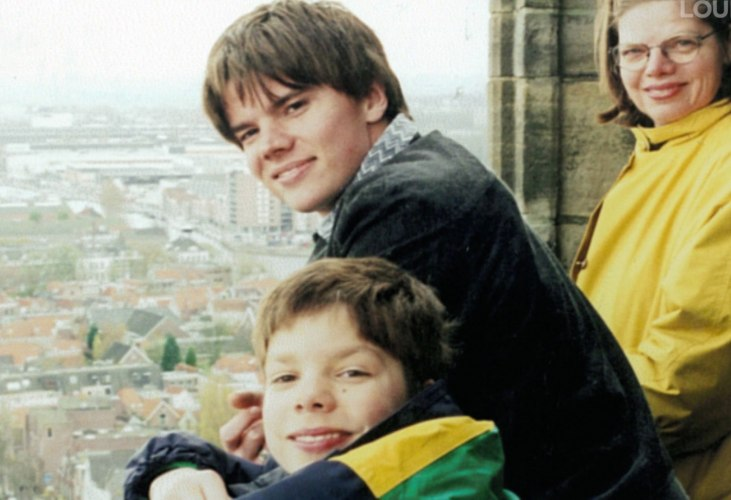
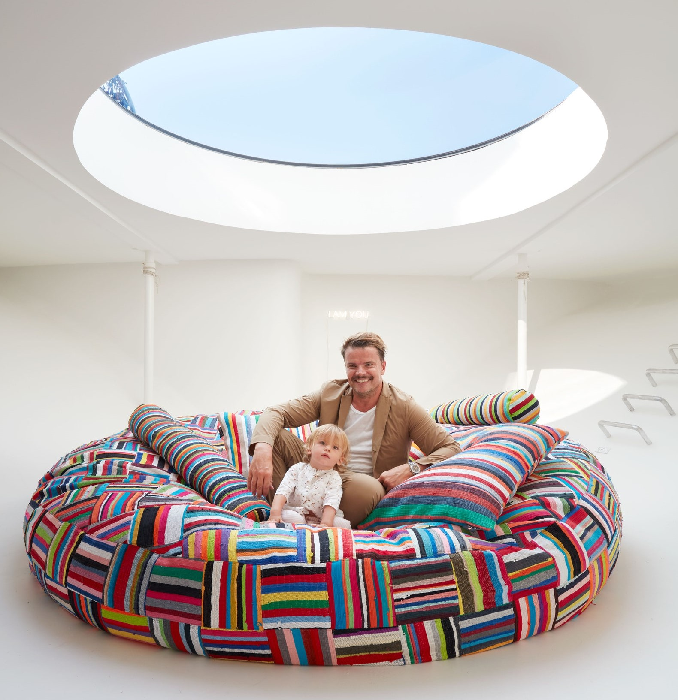
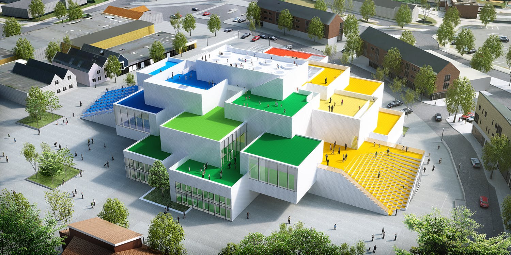
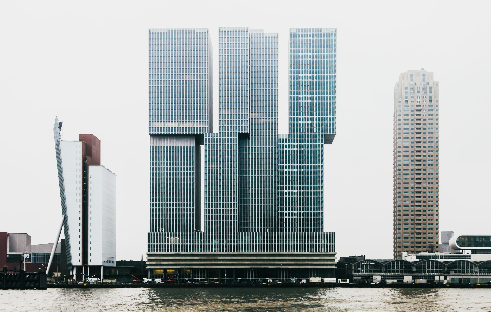

Bjarke was born on October 2nd 1974. Bjarke means bear. His mom was a dentist and his dad was an engineer. He attended
Gammel Hellerup High School in Copenhagen. In 2014 he helped his previous high school by designing and
assisting in constructing a new gymnasium. For university, Bjarke attended the Royal Danish Academy of
Fine Arts. He started attending in 1993. His original dream was to become a cartoonist and he decided to study architecture to
grow and improve his artistic abilities. During university though he started becoming quite interested
in architecture itself. In 1999 he graduated the university.

Bjarke's Boat and the Baby
In 2016 Bjarke attended Burning Man as he typically does, there he met fellow Spanish, architect Rut Otero.
The two began dating shortly after. In 2016, they bought a decommissioned ferryboat.
Initially, the boat had both power and water outages. One morning they ended up having to use San Pellegrino
bottles that were onboard, to bath before an important meeting. When the couple found out they were expecting,
they decided to work much quicker on renovations, so the boat could be ready before the babies birth.
In 2018 the couple had their first child, Darwin Otero Ingels. Now all three of them together
on the boat in Copenhagen Harbor.

Bjarke builds BIG
In 2006, Bjarke Ingels founded BIG (Bjarke Ingels Group). BIG is a popular architecture firm in Denmark,
that also has major international recognition. BIG has offices in Copenhagen, new York, Barcelona, and London.
Right now, they are working on projects in Europe, North America, Asia and the Middle East.
Bjarke was named the Wall Street Journal Innovator of the Year for Architecture, in 2011. Then in 2016
he was one of the new York Times 100 Most Influential People. In 2020 BIG won, Musée Atelier Audemars Piguet's
Best of the Year for Large Museum/Art Gallery design.

Before Big
Bjarke started his architecture career, working for the Office for Metropolitan Architecture
in Rotterdam, from 1998-2005. A former colleague and Bjarke started their own architecture firm in 2001,
called PLOT. The duo was quite successful, winning a Golden Lion for a music house they designed in Norway, in 2004.
PLOT's huge success came from designing an innovate apartment complex in Copenhagen, called VM Houses. Every apartment
in the building had a view of the outside greenery, as opposed to other apartments. Bjarke even lived in the building.
At end of 2005, PLOT dissolved and Bjarke started BIG.
